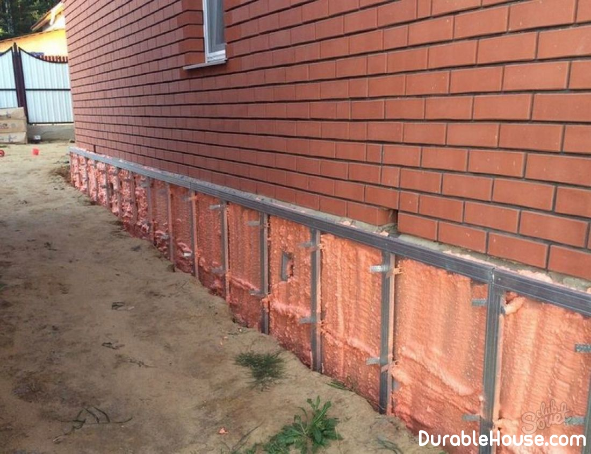

Foundation and basement insulation
 According to TKP 5-2.04-43-2006 "Construction heat engineering. Building design standards »
The floor must be insulated to the level of resistance to heat transfer 6.0. There is a standard for walls.
But the bottleneck remains the abutment of the floor to the wall. There may be significant heat leakage
Through the cold bridges with the participation of the foundation. It is therefore important to determine these cold bridges and
Qualitatively warm them.
Let's consider the basic variants of the foundations.
Belt and pile-and-mortar
The most common version of the foundation. But it concerns and the most common mistake - Insulation, where the foundation is a bridge of cold. Often this problem is attempted to solve with Using a vertical insulation sheet. But this, as a rule, leads to the appearance of a crack on Floor covering over the heater. This is due to the uneven subsidence of the floor screed and Insulation / foundation.
Pile (screw piles)
With such a foundation, as a rule, sex is made on logs. In this case, the lags are warmed, and The underground remains cold. As a heater it is best to use mineral wool - it can be packed very tightly, while at the price it will be one of the most budgetary Options.
The thickness of the mineral wool should be 30 cm if only the beams are insulated, and 25 cm if Insulated beams and logs. The beams themselves in terms of thermal conductivity are an order of magnitude worse than a heater, so They are a bridge of cold. In the case of thermal insulation and beams and logs of cold bridges Overlapping insulation.
With lags, it is possible to use both extruded polystyrene foam (EPS), and expanded polystyrene (PPP). In this case, it is better not to lay it between beams and lags, since It will be possible to ensure a tight fit of the insulation to the beams and there will be heat loss through these Slits. It is better to put polystyrene on top of beams. The plywood is covered with plywood (or OSB or solid Flooring from the board), and then stacked 20 cm of EPPS or 25 cm of PPS. Over plywood, on Which fits any finish floor. On the heater can even pour concrete screed and Laying in it the pipes of the warm floor. In this case, it is important to correctly calculate the cross-section and step Beams.
Theoretically, it is possible to make a warm floor on the ground for this type of foundation. But this It will not be a reasonable option, because piles will be swirled first, and then they will be Tied with a grill. It is not reasonable for this option to be the budget - the pile-and-bucket variant The foundation in this case will be much less expensive.
Warming of the floor above the basement
The floor is insulated from above by EPS or PPS, but the thickness of the insulation must be less than for flooring by Soil, because the temperature in the basement is higher than on the street.
Plate
The walls are put on a solid plate. She is also fitted with a heater under the warm floor. If Instead of a warm floor radiators will be used, the heater still has to be Used. Of heaters, it is best to use EPS or PPP. TFT thickness Insulation should be not less than 20 cm of EPPS or 25 cm of PPP. Possible use in others Heaters (vermiculite, foam glass, expanded clay), but their thickness should be noticeable More.
UWP (insulated Swedish plate)
This is the only foundation insulated by the technology from the very beginning and at a very good level. For Light house insulation is 20 cm EFPS, and for heavy houses - 30 cm. Resistance Heat transfer, respectively, is 6 and 9.